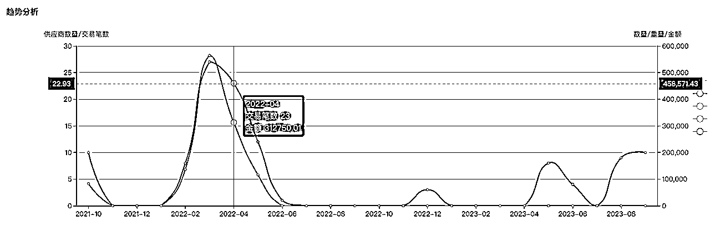
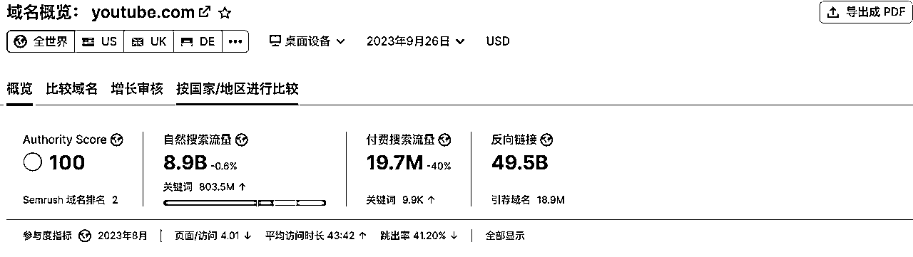
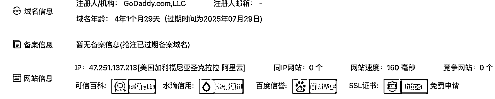
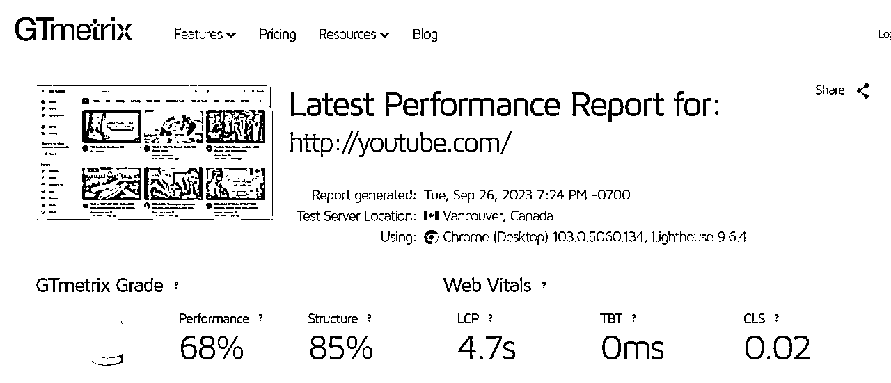
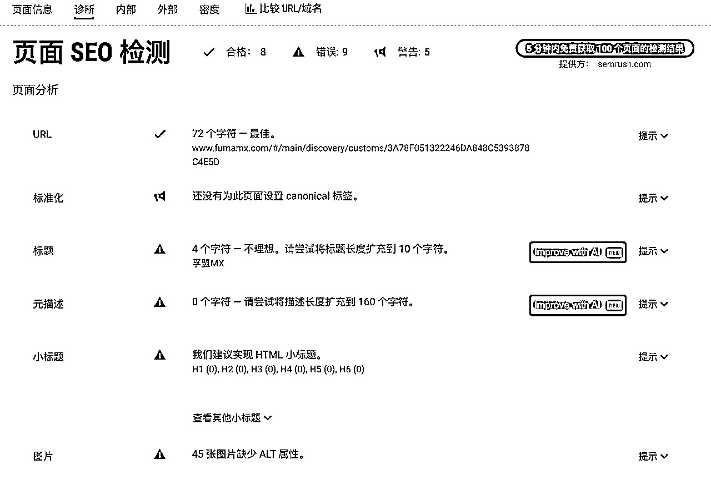

来源：https://awji0vrg4r.feishu.cn/docx/NVIedGNatoQYN1x8oSEcvoLMnXc
外贸耳熟能详，B2B跨境贸易是企业拓展国际市场的重要途径，一个合适的模式可以帮助企业降本增效、增加销售额，提升竞争力，选择适合自己的B2B跨境贸易模式并非易事。很多企业在入局外贸或者拓展新渠道时，对于如何去选择下一步该做什么，如何做往往难以定夺或盲目选择。
大家好，我是卜凡，4年外贸运营经理人，常年在外贸圈摸爬滚打。进入圈子几个月一直在潜水，几乎空闲时间都泡在这里了，不同的赚钱故事，认知，耳濡目染，相见恨晚的感觉，天天的头脑风暴，让自己的心态也逐步又了转变。直到鱼丸老师鼓励输出文章，才写下了自己的第一篇，感谢鼓励和内容组老师的指点。
今天结合自身经验给大家分享如何入局外贸，认识外贸。全文长约5500字，阅读约需10-15分钟。
为什么做外贸
对出口方式的深度剖析
入局外贸需要注意什么，准备什么
1.国内压款现象严重：做过国内工厂的老板应该最清楚了，压款严重，迟迟不打款，现金流转不动，逢年过节送礼+要钱，好吃好喝伺候着，人情世故处理到疲惫。而外贸则不需要很多的应酬等环节，压款现象也基本不存在。
2.寻求更高利润：几乎每个行业都面临这种状态，供应商或贸易商越来越多，卷不动，卷卷就没利润了，如果不是老企业有稳定的经销商等，不愁销路且成本可控，其他人利润少的可怜。而在国际市场，供需就没有这么平等了，某些地区特定产品会有较大的需求。举例：（近两年秋冬季欧洲的火炉，采暖炉，去年俄罗斯对欧洲的天然气减少供应的影响，整个北欧基本迎来超级寒冬，近乎整个欧洲市场只能加大火炉的采购来度过严寒；再比如，卡塔尔世界杯时，为了解决外地游客的住宿问题，大量采购中国的活动板房，集装箱房，来解决住宿问题）。
3.拓展市场，将产品销往全球市场，不再依赖于国内单一供需市场，机会也更多。
这无疑是几种外贸方式里最难操作及管理的。投入最大，难度最大但是优势也居多。
部分区域市场可以享受到降低成本，税收优惠等市场发展及人口红利，如东南亚，庞大的人口基数可以享受到更低的人力成本及土地成本，便宜的原材料等，电商的渗透率更低且增速较快，人口结构也相对年轻化，44岁以下人群占到70%左右。
部分企业对于一些制造型企业或具有复杂供应链的企业来说，设立海外办事处有助于更好地管理供应链。在关键市场设立办事处或工厂，企业可以降低运输成本和交货时间，提高生产效率和灵活性。并有部分对技术或者安装严格把控的企业来讲，可以更好的做到线下服务与售后工作。
从市场开拓方面来讲企业可以更好地了解当地的市场需求、建立经销商，代理商网络，提供更好的销售和客户支持服务。
投入部分主要看市场地区的人力成本及土地成本，及投入设备费用等，上限较高。
也是目前许多企业维护客情或快速开发精准客户的主流贸易方式。
许多大型国际知名展会，如：
工业制造与机械设备展览会：例如德国汉诺威工业展（Hannover Messe）和中国广交会
汽车展览会：例如德国法兰克福国际汽车展览会（IAA）和中国上海国际汽车工业展览会（Auto Shanghai）
消费类电子产品展览会：例如德国柏林国际消费电子展（IFA）和美国拉斯维加斯国际消费电子展（CES）
等等展会。
展会其主要目的和优势为展示企业实力，规模，产品类型等，可供企业快速吸引到专业领域的意向客户并迅速的建立沟通，或成交。很多大型展会需要提前一年甚至几年进行预订，对于需要参加展会的企业需要提前布局规划好参展计划，并预定，多数展会是企业实名制，所以不存在黄牛倒卖，部分展会没有企业实名制的，热门展位或仅剩稀缺位置通常会被黄牛或关系户垄断，否则只能在黄牛那加价好多倍购买。国内多数城市会有自己城市的特色产业链，如山东济宁的工程机械，潍坊黄楼镇的矿山机械，广东深圳的LED屏，键鼠等产品。部分地区当地商务局会根据本地特色产业链去集中申请一些展会的展位，帮助扶持当地企业发展出口业务，这也是展位的重要获取渠道之一。
展会也有比较明显的劣势：如口罩事件，展会出现断层；口罩后疫情时代，以今年3月份中国广交会为例，国内企业都想大干一场，纷纷参加展会，结果则是国内供应商多，参展人员也多为东南亚及非洲地区等发展中国家，并未吸引到欧美等地区的高端企业买家的参展，外国人和收到名片少之又少，成效不言而喻。（非以偏概全，部分行业企业成交依然不错）
投入部分：根据展位费用（大小及位置），参展人员差旅费用，展位装修费用，设备及样品展台的运输费用，及广告投入费用等。上下限都比较明显，可控预算。
目前企业开展外贸或拓展开发客户渠道的必选项，投入及操作难度较低，更适合新跨境人。
线上平台特点：方便线上沟通，线上成交，平台信用背书，产品丰富，流量庞大，成单较吃运营和业务人员的谈判能力与商务英语水平。
下面以alibaba，中国制造网，环球资源。国内三大主流B2B平台为例进行分析。为什么说这三家是主流平台，从创立时间，流量，知名度，专业性，供应商数量等方面数据来讲，这三家都是行业top，其他不做评价，请自行了解。
（1）alibaba：创立于1999年，属于阿里巴巴集团旗下，覆盖了几乎全球所有行业的产品类别，轻工日用品，快销品为主要优势行业，平台在全球广告投入大，名气大，产品及内容非常丰富，独具特色的信用保障体系促进成交，众多的展示广告展位可供选择（直通车，关键词包，横幅广告等）群发询盘模式，客户回复率高，数据分析功能强大，增值服务非常完善：采购代理、质检服务、仓储物流、支付结算等，注册用户数量庞大，是目前国内体量最大的B2B跨境电商平台，触屏PC端用户比例在7:3。在众多平台中，alibaba最吃运营的水平及广告投放支出，平台的规则较为多变，典型的淘系风格，擅长研究规则的人可以在平台拿到不小的红利，减少不必要的支出；运营水平不出众的企业，不擅长研究规则可以依靠加大广告投入依然可以获取较好的流量。投入不固定，人员配置最少两个，较吃专业或有运营经验的人员，上下限都较高，供应商竞争激烈。产出反馈参差不齐，近年首年续约率不足50%，获取询盘主要因素：与产品价格（决定成交），运营水平（账号问题，流量上限），广告投入高低（流量多少）。
投入区间：年费投入少则几万，多则百万，
（2）中国制造网：创立于1998年，属于焦点科技集团（002315）旗下，A股上市企业，以Made-In- China冠名，几乎覆盖全行业类别，工业机械类建材五金类产品为主要优势行业，与很多海外展会及商会有合作，会有商会内推订单RFQ，广告展示相对较为固定，垄断占坑式广告，10个为上限，早入场的企业会更具广告优势。近年焦点科技企业方向为全链路推广，主要包含：独立站，谷歌SEO，CRM客户管理系统，外贸人员培训，海外仓储物流等等，涵盖业务面较广。触屏PC端用户比例在4:6，B端客户占比在95%（2021年10月统计数据）。平台规则简单，1对1询盘模式，投入较为固定，人员配置最少一个，后台傻子式操作，主页展示单一，无需装修，简单易操，产出反馈根据行业差距较大，褒贬不一，近年首年续约率约为60%，多为工业机械类企业。取得较好流量途径为，早入场的热门词广告位，主推产品设置，产品优化。询盘数量及质量比较平稳，性价比较高。
投入区间：年费投入少则几万，多则几十万。
（3）环球资源：创立于1971年，95年上市第一个国际资源站，老牌B2B平台，创立于香港，后被投资管理集团“黑石”收购。从杂志起价，到展会，再到平台，电子行业为主要优势行业。平台审核相对严格，主要对于产品发布的内容审核，供应商有六个星级。自从17年被收购之后，流量下滑较为严重，主要原因为收购集团为投资管理公司，严格把控广告投入导致，年费投入逐年降低，从早年的十几万到几万，再到近几年的几万两年，变动幅度较大。内陆地区选择环球推广较少，用户主要集中在广东地区。
投入区间：通常企业在10-20万不等
流量分析：alibaba>中国制造>环球资源
分析流量来源：阿里流量C端居多，流量来源：亚马逊，速卖通，google等，不少企业反馈阿里逐渐C端化；中国制造网整体流量不如阿里，但65%左右来自谷歌，还有一些B端渠道，展会用户，从买家角度来看，B端买家居多；环球：自从被收购后，流量下滑较为严重。（客观数据评判，无任何引导性）
外贸必备工具型产品
外贸中，海关数据往往成为最重要的做客户背景调查，以及按照行业主动开发客户不可或缺的工具。市面上多数的海关数据价格往往按照数据类型，数据反推技术，数据更新频次，数据完整性高低不一，
数据全面性：部分国家的海关数据不对外开放或需要购买查阅；
数据反推技术，以美国举例，对外显示进出口数量，不显示金额，通过出口方的出口美国的数据去反推美国进口数据；
数据更新频次：海关数据需按时收集、处理和更新。一些数据要实时处理，而一些则可逐月或季度更新，更频繁的数据更新会比较昂贵。
数据完整性：数据完整性也影响价格，如数据存在问题或缺失，会失去其价值。
其优势是通过使用海关数据去了解到采购商的采购数量多少，采购频率，主要采购国家，采购金额大小去判断采购商是否为优质采购客户（见下图），从而进行准确的优质客户开发。但由于主动开发，难以准确拿捏采购商企业采购关键人职位（采购部门经理，CEO，创始人等）的邮箱，电话，或WhatsApp，成为了主动开发的第一大问题。（部分海关数据软件可以抓取标注关键人信息，不过仍需判断）

也是目前B2B外贸企业必备的推广手段。
谷歌作为全球最大的搜索引擎，庞大的数据支撑，最主要的流量端口，不少企业也会进军谷歌作为推广渠道。92%（2021年9月数据统计）的网民都在使用谷歌为主要搜索引擎。
谷歌推广的主要两种方式为SEO优化和SEM点击付费
点击付费顾名思义花钱投入推广，以用户点击数作为主要付费流量。
SEO则是通过技术和内容优化，符合谷歌的收录规则，将网站的排名向前优化，尽量到首页，以拿到更好的流量。
SEO的主要方向为：内容原创，网站年限，关键词优化，网站导航与结构，安全锁链，网站响应速度，外部链接引用，用户行为数据等进行主要收录规则。
其优势为流量端口巨大，方向不同投入不同，作为最大的流量口，SEM无疑是在烧钱～SEO的话更吃运营及专业优化技术人员，各有利弊。
投入部分：SEM（点击付费，投入大，见效快）
SEO（市面上的代优化公司，优化水平，价格且交付水平参差不齐，多为年费制，见效慢呈稳步上升势）
分享几个自己常用的判断谷歌seo优化效果及流量数据的网址：
SEMRUSH：https://zh.semrush.com/projects/（简单易操，需要注册，无需魔法，主要用于测试网站流量）自然流量越高，代表网站优化越好，排名靠前。
付费流量则代表SEM，点击付费投入。

站长工具：https://seo.chinaz.com/（无需魔法，主要用于查询域名年龄，同IP网站以及服务器位置）

GT测速：https://gtmetrix.com/（需要魔法，主要用于测试网站SEO评级及打开速度）
SEO评级越低，代表优化越差，反之越好。
打开速度与对应市场挂钩，影响客户体验，网站内容，服务器及位置影响速度，发达国家网速较快的无所谓，如果目标市场是发展中或落后国家，打开速度往往决定客户在网站的去留

SEOquake：谷歌拓展小程序（近乎全面的网站诊断，合格项符合谷歌收录规则，错误项则有待改进。）
下载需要魔法，后期使用无需，需要在对应网页打开才能诊断。
下载方式：谷歌右上角三小点。。拓展程序。。应用商店搜索工具名称下载即可。

其他海外常用搜索引擎举例：Bing，Yahoo，Yandex，Naver，Ask，DuckDuckgo等
小语种国家常用的搜索引擎：
德国 https://suche.web.de
西班牙 http://ricerca.virgilio.it
英国 https://oscobo.co.uk/
捷克 https://search.seznam.cz
罗马尼亚 http://www.linkuri.ro
泰国 http://dir.sanook.com
俄罗斯 https://yandex.ru
对于新接触的社媒推广的B2B供应商，思路一定是在产品及品牌，人群三个方向。
入门难度较低，但是做出效果来还是有难度的，尤其近几年短视频推广的兴起，门槛对于做传统外贸的货架电商及展会地推方式相比，难度更高。主要定位在产品特色，品牌效用， 受用人群三个点。
目前主流的海外社媒营销平台：Facebook，Twitter，YouTube，Ins，LinkedIn，Tik Tok等多种流量入口。
社媒推广用户终端均为C端个人，但不妨碍会让一些特定职位的人去看到。我们通过精准定位分析海外市场的人群结构，消费习惯，社会文化。针对性对特定人群进行特定内容推送，从而提高营销效果和转化率。
成本效益相较于传统推广方式，成本效益会更高。但是技术要求会更高，比如优质视频内容拍摄及剪辑，合适的发布时间及营销策略，实时的与受众目标互动。
目前市面上的主要的海外社媒推广更多来自于工作室及个人，少有成规模的公司去做专业的社媒推广。收费方式以保证播放量多少，粉丝量多少，推送定制软文多少及频次，拍摄剪辑视频多少，爆款视频量多少为主要收费因素。
社媒推广的优势则是成本效益高，成长空间较大，依靠研究各平台算法，推送至较精准客户，成本效益更高。
劣势则是用户群体泛，无法直接成交，信任程度较低，无背书，技术门槛较高，无法拿到短期收益，需长期运营，放长线钓大鱼。
工商注册，海关注册备案，银行外汇帐户结算账户，税务登记，申请退税等。
加入当地商务局钉钉或者当地商务局官方企业文件通知群，一般地区会有对鼓励出口的相关补贴政策，主要补贴方式为：展会补贴，线上展会补贴，B2B跨境电商平台补贴等，各地区根据需求不同，补贴不同，一般港口城市补贴较少，主要为内陆鼓励出口城市，且高新开发区的政策补贴金额往往会高于老城区，且补贴更快。
了解政策及国家战略：一带一路战略，RCEP全面经济伙伴关系等带来的相关利好政策，如减免关税，贸易标准化程序流程。成员国之间的交易信任加持及利好更加促进成交。
产品主要用于什么行业，什么类型用户，主要集中在哪些国家及地区，该国家和地区有没有对此类产品有无过于苛刻的审核条件，及自己是否符合该市场的条件。清楚了解该市场有无对中国市场的利好（如上述RCEP等）
有无对于产品的针对政策，如：欧盟，漂亮国，印尼等对中国部分商品的反倾销政策等等；欧盟地区对华部分产品需要特定认证等等，不一一举例。
货运代理一条龙，几乎协调了货运及手续的所有环节，需要自行判断找靠谱合适的货运代理公司。
主要费用包含：相关人员招聘费用，办公场地是否需要增加，合适的推广渠道。
新入局的企业建议：从B2B平台及海关数据方面考虑入手，依靠B2B平台历史积累的买家采购商资源，在平台上占一席之地分一杯羹，主要通过发布产品和广告来收到买家的主动询盘。平台的增值服务往往比较全面，及平台合作部分市场的合作商会，不定期带来比较不错的采购订单。海关数据主要用于背景调查，定位优质买家和主动开发，几乎为必备的工具。
在外贸小有所成之后可以再考虑布局谷歌的推广及线下展会，这两点的难度是相对较大点或投入要高些的。
这里推荐一个对于企业主比较友好的工具：CRM客户管理软件（不做推荐，请自行了解），提高客户的二次跟进效率质量，防止员工离职翘单的最好工具，可以提高买家转化率。
文章至此结束，希望大家在各自的外贸路上生出自己的花朵。